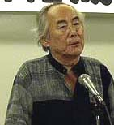

豊田正義さんからの提言
（2003年9月5日エル大阪「1960年三池・1963年ＣＯ大災害」関西写真展実行委員会結成会議閉会の挨拶より）

「１９６０年三池・１９６３年ＣＯ大災害」関西写真展実行委員会発起人代表（関西労災職業病研究会代表、
大阪北摂労災職業病対策会議事務局長）豊田正義さん
えー、本日は、非常に残暑きびしい中をわざわざ足を運んでいただきまして本当にありがとうございます。時間が時間ですので、
簡潔に閉会のご挨拶を申し上げたいと思います。
えー、「上野英信」というですね、まれなる、非常にたぐい稀な、炭坑労働者を一貫して、生涯をかけてルポルタージュいたし
ました作家がおるわけでございますが、彼は「去るも地獄、残るも地獄」という鎌田彗星さんの名著の推薦の冒頭の言葉にですね、
こういうことを言っております。
「有明の海の底深く、無明の根を張る三池炭鉱は、日本資本主義の悪の華である」ということを言っておるわけでございます。
まさにそのとおりであります。
政府統計で労災の統計を解しました１９０６年から１９７８年の間にですね、三池炭鉱の労働者は３６万１６０人が殺され、傷つ
き、倒れました。炭鉱がございます大牟田の街の人口は１６万人であります。ひとつの都会のですね、総人口を上回るところの労
働者の命と尊い肉体をむしばいながら三池炭鉱は生き延び、そして、あの６０年のですね、三池大闘争を挑んできたわけでありま
す。３１３日の死闘の中にですね、労働者が叫んだスローガンは、やはり、鎌田彗星（サトシ）が言った「去るも地獄、残るも地
獄」であり、敵よりも一日も長くというのが闘いのスローガンでもあります。
ところで、「去るも地獄、残るも地獄」というのはですね、４３年前のスローガンではないと思います。現在の労働者階級を取
り巻いている情勢はですね、まさに「去るも地獄、残るも地獄」であります。
現在、３００万人を上回る失業者がおります。もしも、これを再建の是正のためにですね、急ピッチで政策が進められるのであ
れば、さらに１６０万人の失業者が増えるであろう。そして、５００万人を越すのは時間の問題であるとですね、ある興信所はそ
ういうデータを発表しておるわけであります。そして、この失業問題と自殺の問題とは不気味な同一のカードを抱いておるのは、
皆様方ご存知のとおりであります。
過労自殺というですね、働きすぎて自らの命を絶つという、もっとも残酷な労働災害は年間１６００ないし１７００を超えてお
るわけでございます。過労死は年間１万人、そして、一週間にですね、６０時間以上働いておる、いわゆる、過労死予備軍と称さ
れる労働者は５人に１人が過労死予備軍であります。これが今、日本の労働者を取り巻く「残るも地獄」の現実の姿であると言わ
ねばなりません。
先に沖克太郎さんが三池闘争の４０年の歴史の概括を述べられましたが、私は、労働者階級の尊厳と誇りを守り抜いた歴史でも
あると思います。
１９８９年、この関西の地に、韓国からアジアスワニーの婦人労働者が、まだうら若い婦人労働者が、ファックス１枚で工場閉
鎖、全員解雇の攻撃に抗議してまいりました。その時彼女たちはですね、要求をしたためるのに血判したのであります。カミソリ
で自らの指先を痛めつけてですね、こうして血をさらに流しながら血判したのでありますが、それを見ていたおまわりは震えてお
りました。私は、彼女たちが叫んだこの言葉は今も忘れることが出来ないんであります。「労働者の誇りと尊厳を傷つける者に対
しては、私たちは命を賭けて闘う」と叫んだんであります。これは、日本の労働者階級がながーいこと忘れておった本当の意味で
の階級的言葉であろうと思います。
そういう点で、この関西写真展、「６０年三池闘争、６３年ＣＯ大災害写真展」をですね、どうか皆様のお力でもって成功裏に
完遂していただきたいと思います。そして、取り分け労働組合に失望してですね、「もう労働組合なんていらん」と思い込んでお
る、特に若手の労働者にですね、この写真展をお勧め願いたいのであります。あの写真を通じて、三池の労働者は皆さん方に厳し
く、熱烈に呼びかけていることは間違いないと思います。
どうか写真展の成功のためにですね、本日結集していただきました皆さん方にですね、ご協力とご支援をお願いいたしまして、
本日の実行委員会を終えるに当たってのご挨拶に変えさせてもらいたいと思います。
BACK
|